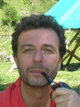

19 settembre, 2011 | di Andrea Borruso
In questo post parlerò un po’ di TANTO, dei suoi autori e di come stanno insieme. Non sarà un contributo dei “nostri”, ma è in un certo senso necessario.
A giugno del 2011 questo spazio ha festeggiato il suo sesto compleanno e, come ho detto in altre occasioni, non avrei nemmeno immaginato di arrivare alla prima candelina; figuriamoci la sesta. Ogni anno, in corrispondenza della ricorrenza, vorrei sempre scrivere un post celebrativo, perché mi piacciono le cerimonie e soprattutto i rituali, perché fanno “un giorno diverso dagli altri giorni, un’ora dalle altre ore”. Ma non sono quasi mai riuscito a rispettare le date; almeno quelle ufficiali.
Per (mia) fortuna, almeno una volta all’anno, per una ragione o per un’altra, viene sempre un momento, in cui riesco a fissare sulla “nuvola” alcuni pensieri su questo cammino iniziato più di sei anni fa.
Non vi parlerò di TANTO come blog, delle sue statistiche di accesso, delle soddisfazioni professionali e personali che ci siamo tolti utilizzandolo come interfaccia con il mondo esterno. Non è poco, ma è riduttivo rispetto a quanto gli autori di TANTO hanno acquisito e costruito insieme: essere soprattutto una (piccola e sgangherata) comunità, un insieme di persone che hanno comunione di vita sociale (purtroppo soprattutto virtuale) e che condividono alcuni comportamenti e interessi. In questa ho avuto l’opportunità di crescere professionalmente e soprattutto umanamente, e continuo sempre a stupirmi di quanto siano robuste le cose che ci uniscono e di quanto mi stimolino quelle che ci dividono.
In questi sei anni siamo cresciuti in numero, soprattutto siamo diventati un gruppo più sano e più maturo. Questo stato di salute ci da l’opportunità di avere una certa facilità nel creare bei rapporti con le persone, perché il benessere e il benestare sono in qualche modo contagiosi e magnetici. E anche noi siamo ovviamente sensibili al magnetismo.
Una di queste persone, con la quale da diverso tempo in qualche modo ci specchiamo, quest’estate – parlando della sua azienda – ci ha scritto:
L’ho costruita con questa idea, la condivisione, la libertà e il rispetto. Nella speranza di costruire una rete di persone delle quali fidarsi. Che non si muovano solo per una fattura, ma anche per un “bene” comune, senza pressioni, ognuno dando quello che sa fare meglio, quando può. E ancora oggi, nello scriverlo, sembra una cosa così semplice. E’ per quello che ci credo. E’ un “motto” semplice e incredibilmente potente.
Non si “vive” di queste frasi, ma incontrare questo tipo di persone, scambiare con loro idee e provare a creare insieme qualcosa di concreto, sicuramente fa stare meglio.
Abbiamo allora deciso di invitarla a fare parte della nostra tavola e ha accettato. Si tratta di Andrea Antonello e questo post vale anche come benvenuto ufficiale da parte di tutta la redazione.
Andrea non ha bisogno di presentazioni, è uno dei guru della geomatica italiana (e oltre), una “cintura nera” di Java, specializzato nello sviluppo di applicazioni spaziali. E’ il creatore (tra le altre cose) di JGrass e Geopaparazzi, ed uno dei soci di HydroloGIS.
Siamo in contatto da alcuni anni: al primo incontro “intenso” che abbiamo avuto (purtroppo soltanto una video conferenza di un’ora), mi colpì per una grandissima disponibilità e competenza. Con lui c’era la sua socia Silvia Franceschi, ed anche lei mostrò le medesime virtù.
In un post di alcuni fa in cui davo il benvenuto a Pietro, sostenevo che il successo di un Blog fosse avere un nuovo autore. Avere Andrea con noi sarà una grande risorsa per i nostri lettori, e quindi (per me) una conferma di questa tesi. Ma la cosa più bella, il successo che per ora mi sembra il più grande, è che questo gruppo ha creato le condizioni per cui tutto questo accadesse.
Tutto qui, poco, ma tanto.
Posted in Entropia | 6 Comments »
23 settembre, 2009 | di Pietro Blu Giandonato

Una cosa è discutere tra noi “addetti del settore” (“geek” NdT) di aspetti tecnici, un’altra curare il marketing delle nostre creazioni, delle nostre aziende, e un’altra ancora usare i nuovi media per tendere una mano e aiutare le nuove generazioni.
Queste parole di Jeff Thurston mi hanno letteralmente folgorato quando le ho lette sul suo blog VectorOne. E mi hanno spinto a dire la mia. Stiamo parlando di tecnologie geospaziali, tanto per essere chiari, e del mondo dei media che ruotano loro attorno.
Con Andrea, Massimo e altri (pochi) amici – appunto “addetti ai lavori” – ci confrontiamo spesso su come e dove stia andando la blogosfera geomatica in Italia, e ci chiediamo “a che punto siamo”. Per come la vedo io, in una fase di sostanziale stallo, nella quale il livello della comunicazione sembra non riesca a evolvere verso una comunità nella quale tecnici, tecnologi, utenti, aziende, sviluppatori riescano a costituire una massa critica capace di dare vita a idee, soluzioni tecnologiche, nuovi settori di mercato che siano autenticamente innovativi. E al tempo stesso costruire una base di conoscenze, una risorsa/feedback per la comunità stessa, anche e soprattutto per i “newbie”, coloro che si avvicinano per la prima volta alla geomatica.
Thurston – citando Carlson – evidenzia come il punto debole dei nuovi media su web (in primis i blog) sia l’essere essenzialmente orientati verso la “numerosità dei collegamenti”: più si è linkati, più vuol dire che si è letti, più si è letti, più si è importanti. Un cortocircuito pericoloso che porta al “doping” dell’informazione.
Focalizzando la questione sulla geomatica, sempre citando Thurston
La domanda più importante per la nostra comunità è legata al modo in cui essa si collega allo sviluppo della ricerca, alla formazione, lo studio dell’ingegneria, delle scienze dell’informazione geografica e di tutte le discipline connesse.
[…]
E se i nuovi media siano solamente uno strumento di marketing, o possano essere usati per costruire capacità, supportare altre persone non ancora coinvolte e in che modo poter fare questo. Del resto, nuovi mercati richiedono nuovi clienti.
Clienti, utenti, tecnici, professionisti, studenti consapevoli, aggiungerei io. Si tratta dunque di capire se vogliamo – come attori della comunità geomatica – convergere dalle rispettive posizioni di: aziende votate esclusivamente al marketing, tecnologi e sviluppatori concentrati essenzialmente sulle soluzioni tecnologiche migliori, mondo della ricerca scollegato da quello del mercato, per creare le giuste sinergie che riescano a dar luogo a una massa critica, e un livello dell’informazione costantemente in evoluzione.
Ecco che dunque le aziende illuminate, che producono reale valore aggiunto per la comunità geomatica, sono quelle che promuovono periodicamente concorsi di idee, awards, incentivano la ricerca anche nei singoli, che puntano sull’educazione e sulla formazione nelle scuole. Gli editori, le associazioni più lungimiranti sono quelli che puntano sull’organizzazione di eventi che stimolano l’incontro tra innovatori, mettono a confronto progetti. E per quanto riguarda i media, sempre Thurston:
Qual’è l’equilibrio nella blogosfera geospaziale? Diamo valore alle opinioni e alle differenze di pensiero? O piuttosto cerchiamo l’omologazione orientata al mero conteggio dei link?
Vincente, autenticamente innovativo è l’approccio che porta proprio alla valorizzazione delle differenze dei punti di vista, che mette in discussione lo status quo.
A che punto è la notte, secondo voi, in Italia?
A mio parere i pochi editori “puri” attivi nel settore sono troppo incentrati sul mondo delle imprese, trascurando gli aspetti della ricerca e dell’innovazione. Aspetti che possono invece essere curati e incentivati proprio dalle stesse aziende e rilanciati dalla blogosfera. Quest’ultima ha a sua volta un ruolo fondamentale di stimolo e pungolo sia per il mercato della geomatica, mettendo a confronto le soluzioni tecnologiche commerciali e aperte, sia come punto di riferimento per lo stuolo di nuovi utenti, professionisti e studenti, che sempre più numerosi si avvicinano al nostro mondo, e che chiedono aiuto, orientamento e incoraggiamento.
Posted in Entropia | 5 Comments »
8 luglio, 2009 | di Andrea Borruso
In questi giorni, o forse nelle prossime ore, un nuovo autore pubblicherà su TANTO il suo primo post. Non vi tedio con il mio solito elogio del “fare insieme”, ma non rinuncio al mio ruolo di ospite e vi presento Sergio Farruggia.
Sergio è quello dietro la pipa, nella foto qui accanto. E’ l’ennesimo autore di questo blog, che in precedenza è stato un affezionato lettore.
A tutti quelli che si iscrivono al servizio di avviso per email per ogni nuovo post, mando un’email “vera”. Uso più o meno la stessa struttura per tutte, ma la corredo (quasi) sempre con qualcosa di personale; farlo mi sembra il minimo, un lettore fidelizzato merita attenzione.
Non tutti rispondono a questa mia email. Non è necessario, ma lo apprezzo molto. Sergio si è iscritto al suddetto servizio nel Novembre del 2008, ed è uno di quelli che lo ha fatto:
[...]visito periodicamente TANTO da parecchio tempo. E’ utile, interessante e divertente. Se t’interessa, potrei segnalare news quando mi capitano.[...]
I complimenti fanno sempre molto piacere, ma quella volta mi colpì molto la sua proposta diretta. Il tempo poi è passato e non se ne è fatto nulla, sino a qualche giorno fa, quando mi ha proposto di pubblicare un report sulla “Conferenza mondiale dell’associazione Global Spatial Data Infrastructure (GSDI)“. Ho pensato: “figata”.
Non riesco a muovermi molto dal posto in cui vivo, e la lettura di questo report mi ha portato a Rotterdam e dentro le GSDI. Il suo sguardo sarà utile a tutti quelli (penso tanti) interessati a questo grande tema ed agli altri di cui si occupa.
Sergio ha un curriculum “importante” e “diverso” da quello degli attuali autori di TANTO.
E’ nato nel 1954 ed è consulente nel settore dell’Informazione Geografica. Laureato in Fisica, ha collaborato a ricerche nel settore del risparmio energetico e l’utilizzo di fonti energetiche rinnovabili presso il Dipartimento di Energetica ed Applicazioni di Fisica dell’Università di Palermo. Ha operato in SYSGEN srl – Genova (assorbita da CAP GEMINI nel 1991) come responsabile di progetti IT dell’UO “Territorio e Ambiente”. E’ stato dal 1995 al 2007 dirigente responsabile del Settore SIT del Comune di Genova. Negli stessi anni ha collaborato a diversi progetti di R&S comunitari inerenti l’Informazione Geografica ed ha coordinato il progetto “Genova-Rijeka Tecnologie, GE.RI.T.”, 2004-2005, co-finanziato dal Ministero delle Attività Produttive. E’ membro del Consiglio Scientifico della Federazione ASITA dal 2007, dal 2009 vicepresidente; membro del Comitato Tecnico Nazionale per il Coordinamento Informatico dei Dati Territoriali, istituito dal Ministro per l’Innovazione e le Tecnologie, dal 2004; componente del Comitato di Indirizzo del Consiglio di Corso di Laurea in Geografia, Università di Genova, dal 2004; dal gennaio 1996 membro del Consiglio Direttivo dell’Associazione Scientifica AM/FM GIS Italia, dal 2001 al 2008 vicepresidente; dal 1996 è membro del Comitato Esecutivo dell’Associazione GISIG, Genova.
Ha una caratteristica che mi piace molto: è di Genova. E’ una città che sento vicina alla mia (Palermo) e che lega sempre di più questo blog alle città di mare (sinora Palermo, Napoli, Bari e Pescara).
Benvenuto tra di noi!!
Posted in News | 2 Comments »
19 aprile, 2009 | di Andrea Borruso
Esattamente un anno fa scrivevo un articolo (quasi) con lo stesso titolo di questo. Non è un fatto scaramantico, ne è la mia testa a perder colpi (vedrete che un po’ li perde); è semplicemente successo di nuovo.
Ancora una volta uno dei lettori più attenti di TANTO, si è insinuato subdolamente in casa nostra  . Prima qualche commento, poi si iscrive alla notifica automatica di ogni nuovo post, poi qualche scambio di email, poi sfrutta la conoscenza delle nostre email e passa per le chat, poi mi chiede spazio sui server per scambio di materiale “strano”, poi si prende di coraggio e mi da dello “smanettone”, poi mi fa notare che ho sbagliato il mio primo mashup … insomma uno da tenere a bada.
. Prima qualche commento, poi si iscrive alla notifica automatica di ogni nuovo post, poi qualche scambio di email, poi sfrutta la conoscenza delle nostre email e passa per le chat, poi mi chiede spazio sui server per scambio di materiale “strano”, poi si prende di coraggio e mi da dello “smanettone”, poi mi fa notare che ho sbagliato il mio primo mashup … insomma uno da tenere a bada.
Un po’ scherzo ed un po’ no. E’ un rapporto che si è alimentato in modo molto sano, a partire dalla condivisione di alcuni interessi. Avere un lettore così, è una delle cose più piacevoli che possano accadere a chi – come noi di TANTO – usa uno spazio web per condividere esperienze e passioni.
Diverso tempo fa, alla fine di due chiacchiere in chat, nasceva l’idea di fare scrivere al nostro lettore misterioso (ancora un po’ di pazienza) un tutorial su MapFish.
C’è voluto molto tempo, ma ieri ho finalmente ricevuto da Alessio Di Lorenzo proprio il testo di quel tutorial. Sarà pubblicato in settimana e sicuramente attirerà l’attenzione di molti lettori. Avevo parlato di Alessio, proprio nel mio ultimo articolo sulle modalità di pubblicazione di base dati (ripeto è uno che si insinua), definendolo “un amico geologo abruzzese e curatore del portale cartografico del Parco Nazionale della Majella” e facendo un grande errore: è in realtà un biologo marino, ed è invero la mia testa a perdere colpi.
Ma non è soltanto di Ale che voglio parlare, lo farà meglio lui con il suo tutorial.
Nel post di un anno fa scrivevo (mi fa paura, citarmi):
La vita di un Blog è semplice: ha bisogno di un po’ di passione, di un po’ di tempo, di buoni contenuti e di lettori fidelizzati. E’ semplice definirla, ma non praticarla, specie se gli autori sono pochi e magari hanno giornate dense di impegni e di scadenze. I commenti dei lettori, i suggerimenti e le critiche, le citazioni dei contenuti, tutto ciò che è relazione e scambio con gli altri è linfa. Quando dopo una giornata di lavoro impegnativa, leggi un’email con un lettore che ti ringrazia e ti mette in difficoltà con una domanda inaspettata, passa la stanchezza e ti ritrovi a scrivere un post su FWtools all’alba.
Questa linfa oggi mi sembra ancora più forte ed importante; e non solo per questo Blog. Meccanismi di questo tipo dovrebbero essere una base comune a tutti i luoghi di aggregazione, piccoli e grandi, virtuali e reali. Vedo nel mondo che “ci piace tanto”, nel mondo dell’informazione geografica, un grosso momento di stasi, molto grigiore, e pochissimi “salti”. Troppa attenzione a procedure software, alla precisione di un calcolo, al freddo raggiungimento di un risultato.
Tra un anno magari avrò la fortuna di accogliere due altri nuovi autori, e a quel punto scriverò un altro post, ma stavolta cambierò titolo: “Il successo di una comunità? Dei nuovi compagni di squadra”.
Benvenuto Alessio, e grazie.
Posted in Entropia | 1 Comment »